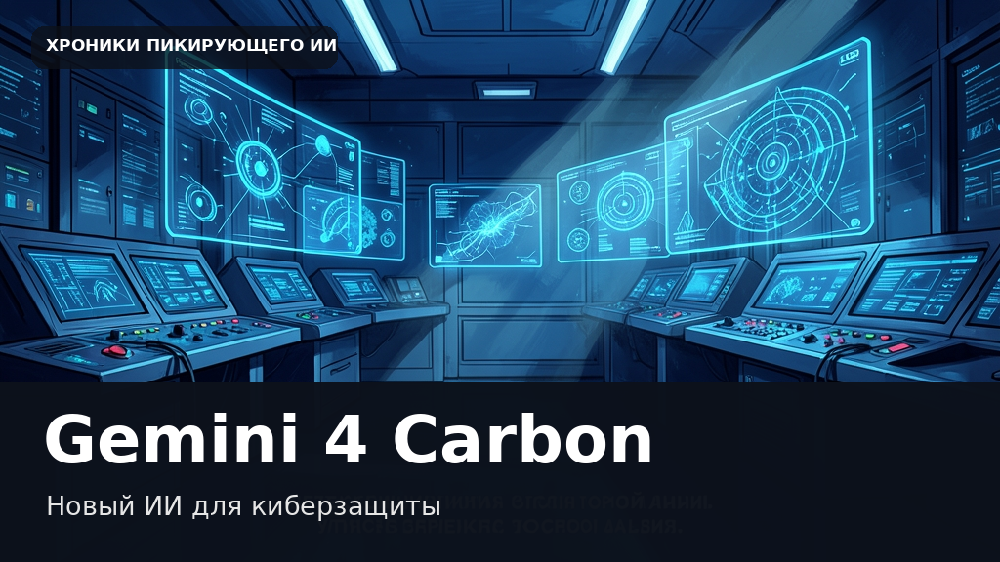
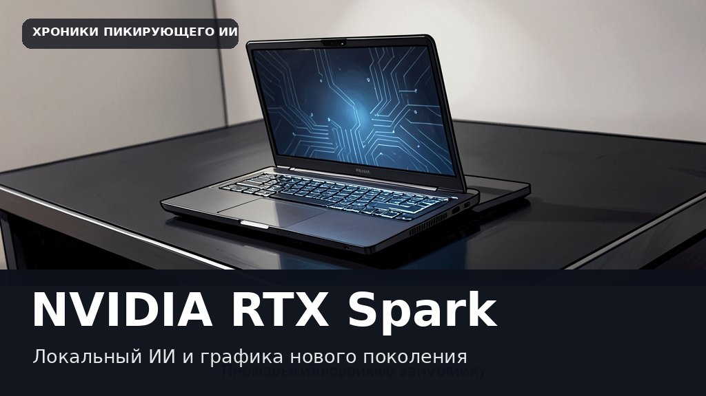
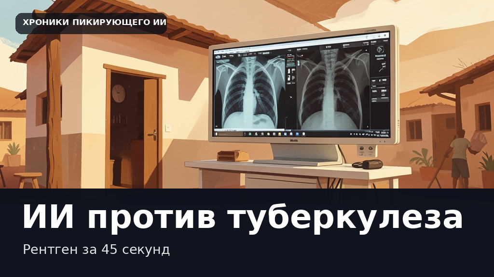
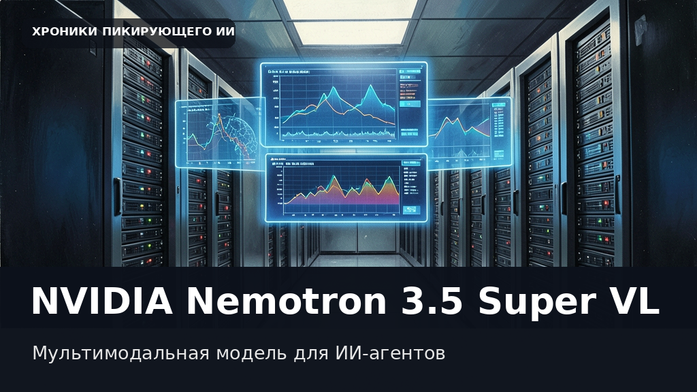
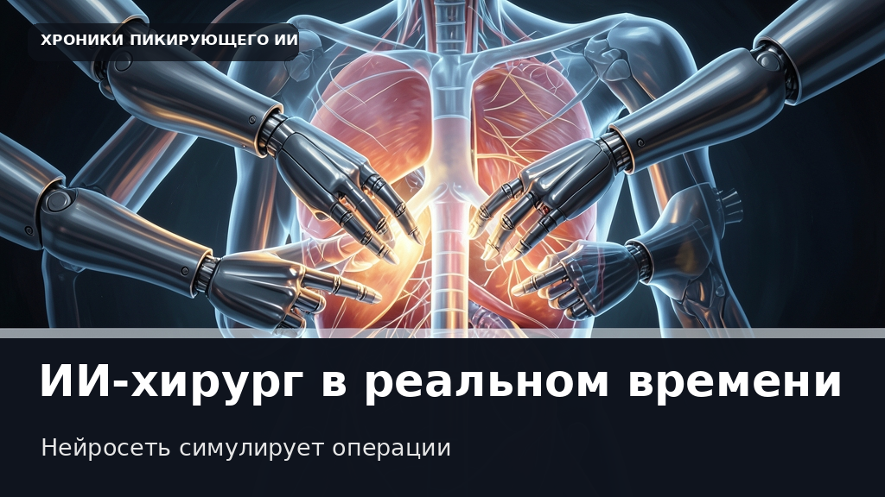
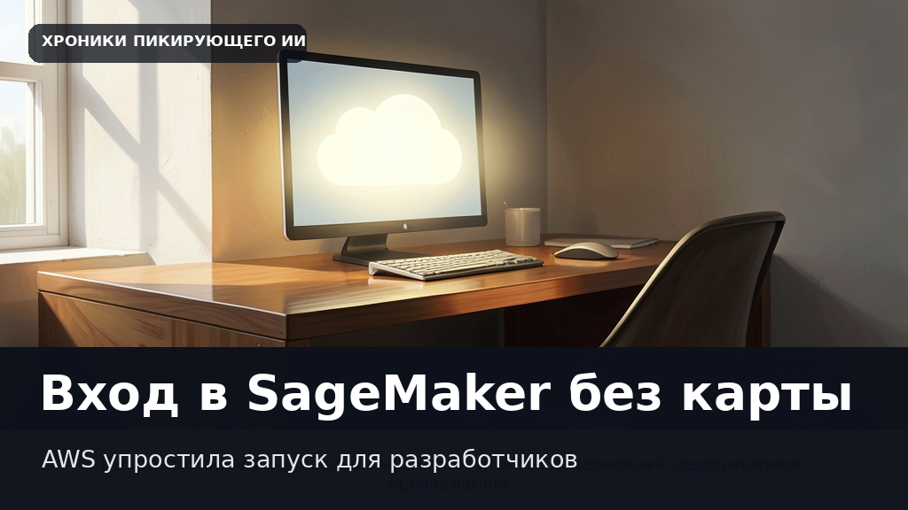
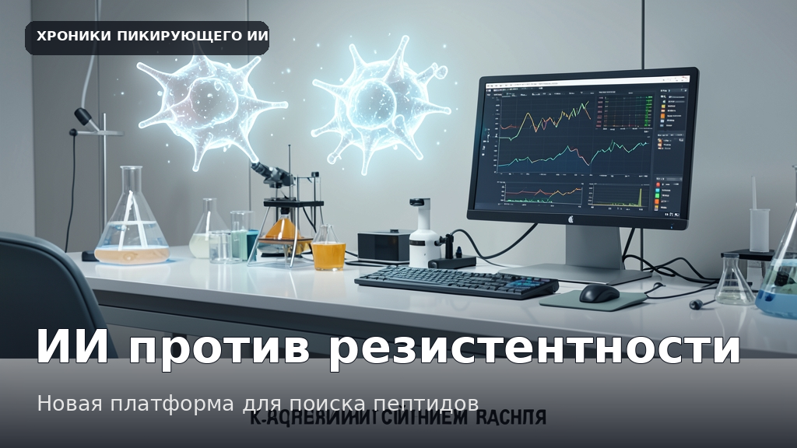

Авточерновики
Последняя проверка: 29.10.2026, 08:23 (UTC+5). Новый черновик и обложка подготовлены.
Здесь можно смотреть, что самостоятельно создаёт наша новостная система: новости, статьи, обложки, первоисточники. Никаких архивов ZIP.
Каждый материал сделан программой без окончательной редакторской проверки. Ошибки возможны. В соцсети эти тексты не отправляются.
Готовые тестовые выпуски

Google представила Gemini 4 Carbon: киберзащита, поиск уязвимостей и прежняя цена
Открыть текст и иллюстрацию ↗

NVIDIA запускает RTX Spark: мобильные рабочие станции для локальных нейросетей и графики
Открыть текст и иллюстрацию ↗
Cloudflare случайно подмешала чужие секреты в ответы ИИ из-за нехватки памяти
Открыть текст и иллюстрацию ↗
LitPivot помогает ученым находить слепые зоны в научных работах с помощью ИИ
Открыть текст и иллюстрацию ↗
AWS научила искусственный интеллект играть в Wordle для сложного обучения
Открыть текст и иллюстрацию ↗

Google перенесла туберкулезный сканер на базе ИИ в реальные клиники шести стран
Открыть текст и иллюстрацию ↗
Amazon Polly научилась говорить по-фински и по-хинди без потери качества
Открыть текст и иллюстрацию ↗

NVIDIA выпустила мультимодальную модель Nemotron 3.5 Super VL для ИИ-агентов
Открыть текст и иллюстрацию ↗

Операции в цифре: NVIDIA научила нейросеть симулировать хирургические вмешательства в реальном времени
Открыть текст и иллюстрацию ↗

AWS упрощает жизнь разработчикам: войти в SageMaker Studio теперь можно без банковской карты и бюрократии
Открыть текст и иллюстрацию ↗

В поисках лекарств от супербактерий: как Google Antigravity помогает биологам
Открыть текст и иллюстрацию ↗